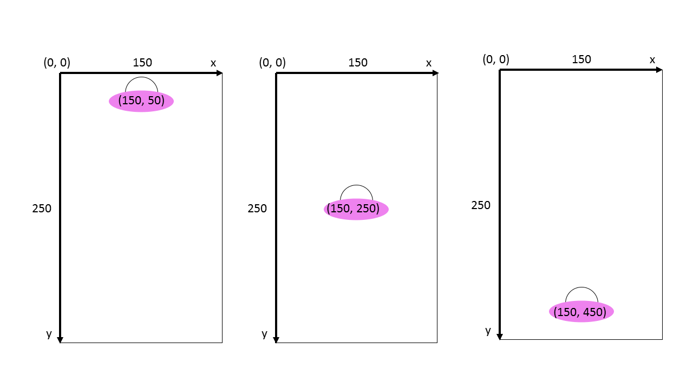

5.2.5 Yksinkertainen esimerkki
Yksikertaisessa interaktiivisessa ufoanimaatiossa, ufon tilaa mallinnetaan kokonaisluvulla, joka kuvaa ufon sijaintia y-akselin suunnassa. Lähtötila on 0, jolloin ufo sijoitetaan kuvan yläreunaan (origo on ruudun vasemmassa yläreunassa ja y-akseli kasvaa alaspäin). Jokaisella kellon tikityksellä ufon y-koordinaatti kasvaa ja ufo laskeutuu alaspäin. Esimerkissä ufo hyppää ylöspäin kun painetaan nuoli-ylös-näppäintä. Animaatio päättyy kun ufo on maassa.

(require 2htdp/image) (require 2htdp/universe) (define KORKEUS 500) (define LEVEYS 300) (define TAUSTA (empty-scene LEVEYS KORKEUS)) (define UFO (overlay/xy (ellipse 120 40 "solid" "violet") 30 -25 (circle 30 "outline" "black"))) (define (piirrä-kuva y) (place-image UFO 150 y TAUSTA)) (define (siirrä y) (+ y 5)) (define (hoida-näppäin y näppäin) (cond [(key=? näppäin "up") (- y 50)] [else y])) (define (valmis? y) (> y (- KORKEUS 40))) (big-bang 0 (to-draw piirrä-kuva) (on-tick siirrä) (on-key hoida-näppäin) (stop-when valmis?))